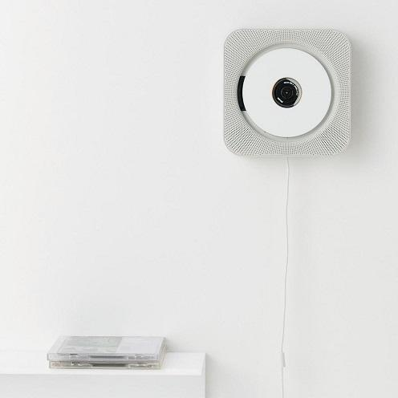

Once the representation is settled, we can search for feasible solutions. Starting with an apple, a fruit knife, and a pair of scissors, this essay explores two kinds of “cache” that can hide a solution: Mental set and functional fixedness.
What does a feasible solution consist of in practice? I think it has two necessary parts: resources and methods. To peel an apple with a knife, the knife is the resource; the way you peel is the method.
The original essay proceeds through a series of increasingly silly questions. Try them: choosing an answer advances to the next question. Your answers and comments stay on the answer sheet; click a question number to go back.
Pause at the difference between questions 3 and 4. When we choose a knife over scissors, we are actually solving a stronger problem: removing the peel optimally. But by what standard? Every choice requires a criterion. Once the criterion is explicit, the task becomes an optimization problem. Search is only the process; the purpose is to choose.
Suppose the knife cannot open the wine bottle, yet Li Lei—having peeled four apples and a pear—still insists on using it. He has fallen into a Mental set: when solving similar problems in succession, you cache a previous solution and try it first on the next problem.
The water-jar task mentioned in the original comes from Luchins’s classic 1942 experiment. You have three jars, A, B, and C. Add or remove one whole jarful at a time until the basin holds the target amount. Work through all ten problems in order, using as few steps as possible.
The first five problems can all be solved with B − A − 2C. From problem 6, something changes: A − C or A + C takes only two steps. In problem 8, only A − C works. Most of Luchins’s participants who had practiced the first five kept using the old four-step method; some became stuck at problem 8. A control group without that practice usually found the two-step solution directly.
As the original essay notes, the water-jar experiment is a relatively mild case: on the critical problems where the old method still works, participants merely overlook the optimal solution while still finding a feasible one. But when a method has solved every previous problem, you may take a long time to abandon it on one where it fails, as in problem 8. With a hammer in hand, everything looks like a nail: a kind of overfitting. Escaping mental set may require you to clear the mental cache, set aside prior bias, and search for and evaluate solutions afresh.
Return to question 2. Han Meimei insists there is no solution: scissors are for cutting paper decorations, so how could they peel an apple? This is functional fixedness. When we first encounter an object, we often learn only its main function and bind the two together. A pencil means writing; it may be much later before we realize it can rewind a cassette.
But objects can be decomposed into more basic parts, each with simpler functions. A function is not the object itself. Switch to “Take apart,” then hover over or tap a component to see which tasks it can support.
Psychology and design offer a more precise term for separating an object from its functions: affordance, originally meaning all the actions an object makes possible. “All” suggests two things: an object may have multiple functions, and our knowledge of it may be incomplete.
Functional fixedness is not useless. It helps us learn an object’s most useful function and recall it quickly later—a longer-term cache, much like mental set. The problem is the fixedness. Focusing on affordances encourages us to treat solutions as systems that can be taken apart and recombined, revealing overlooked possibilities.
The original illustration is MUJI’s wall-mounted CD player, designed by Naoto Fukasawa, captioned “Decomposition and recombination.” It separates a player into a turntable, speaker, and switch. The whole front becomes a speaker; an extractor fan’s pull cord becomes the switch.
In design, affordance later acquired another sense: the functions you can perceive without much thought. A hanging cord needs no instruction manual. Click the player to pull the cord and start; click again to stop.

Designers need to distinguish visible and hidden functions, deliberately moving the boundary to reveal what matters and hide unnecessary possibilities. This is a constructive use of functional fixedness: if people already associate a pull cord with switching something on, borrow that cached association.
One square in two drawings, the hidden arrow, search trees, representation, and design.
This page: six peeling questions, water jars, taking scissors apart, and a pull cord.
Metro routes, unrestricted travel, the big picture, and falsifying a conjunction.
The trolley problem, a balance of values, two thousand possible yous, preference systems, and cycles from changing criteria.
From the March 2026 proposal: similarity, classification, and theory-laden observation.
Ask what it can do, not what it is. Work with behavioral data and let users set their own weights.
Test environments as counterfactual explorers, dual sensors, and Bayesian Safety.